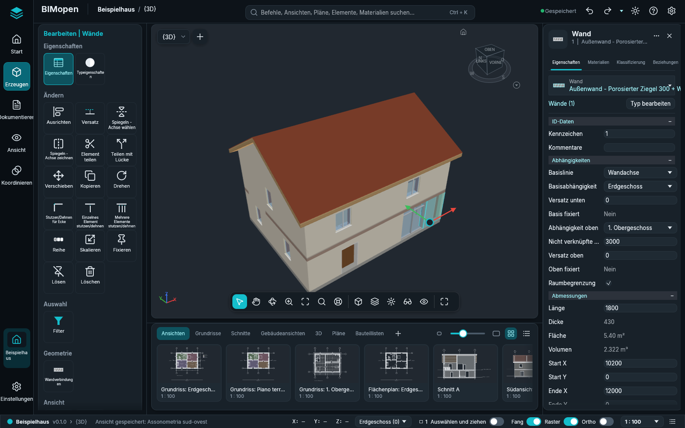

Oberflächenstile
BIMopen hat zwei Oberflächenstile. Beide führen dieselben Befehle aus, mit denselben Namen, Tastenkürzeln und Ergebnissen; nur das Aussehen und der Ort der Werkzeuge ändern sich.
- Der Stil Revit, beschrieben in Die Benutzeroberfläche: die Multifunktionsleiste, die Optionsleiste, die Palette Eigenschaften und der Projektbrowser. BIMopen startet in diesem Stil.
- Der Stil BIMopen: eine Seitenleiste, eine Befehlssuche, Werkzeugkarten, schwebende Werkzeuge über der Ansicht, ein Elementbereich mit Registerkarten und eine Leiste mit Ansichtsminiaturen.
Den Stil wählen
- Öffnen Sie das Anwendungsmenü und wählen Sie Optionen (im Stil BIMopen das Zahnrad am rechten Ende der oberen Leiste).
- Stellen Sie unter Benutzeroberfläche die Oberfläche auf Revit oder BIMopen.
Das Fenster ändert sich sofort. Die Wahl bleibt gespeichert, am Computer und im Browser, und die nächste Sitzung startet im selben Stil. Design (Hell oder Dunkel) gilt für beide Stile.
Der Stil BIMopen

| Teil | Wo | Was er enthält |
|---|---|---|
| Seitenleiste | Linker Rand | Das Zeichen von BIMopen (das Anwendungsmenü), Start (das Projekt), Erzeugen, Dokumentieren, Ansicht, Koordinieren, das geöffnete Projekt und Einstellungen. Sie ersetzen die Registerkarten der Multifunktionsleiste. Ein Klick auf den gewählten Eintrag klappt den Werkzeugbereich ein |
| Obere Leiste | Oben | Das Projekt und die aktive Ansicht, die Befehlssuche, Rückgängig und Wiederholen, der Speicherzustand, das helle oder dunkle Design, das Menü ? und Optionen |
| Werkzeugbereich | Links, neben der Seitenleiste | Die Registerkarten der Multifunktionsleiste als Kachelgruppen, jeder Befehl einmal: Erzeugen hat Start und Einfügen (mit der Registerkarte Architektur), Dokumentieren die Pläne und Beschriften, Ansicht die Registerkarte Ansicht und den Projektbrowser, Koordinieren Abfrage, Einstellungen Verwalten. Solange ein Werkzeug arbeitet oder etwas gewählt ist, steht die kontextbezogene Registerkarte («Ändern | Wände»: Verschieben, Kopieren, Drehen, Spiegeln, Stutzen, Ausrichten, Profil bearbeiten, Bearbeitungsmodus beenden…) oben; Esc oder ein Klick ins Leere nimmt sie weg |
| Optionsstreifen | Über der Ansicht, solange ein Werkzeug arbeitet | Die Optionen des Werkzeugs (Höhe, Positionslinie, Kette…), die Optionsleiste des Stils Revit |
| Ansicht | Mitte | Die Ansichtsauswahl und + für eine neue Ansicht. Eine einzige Ansichtsleiste unten in der Mitte: Auswählen, die Modi Verschieben, Orbit (3D) und Zoom (ist einer aktiv, zieht die linke Maustaste die Ansicht; Esc beendet ihn), Zoom auf Ganzes, Zoomoptionen, SteeringWheels (3D) | der visuelle Stil, die Detailgenauigkeit, Sonne und Schatten (3D), Zuschneiden (Ansicht zuschneiden, Zuschneidebereich anzeigen), Temporär ausblenden/isolieren (sein Menü, wie in der Ansichtssteuerungsleiste; die Ansicht ist umrahmt, solange es aktiv ist) und Verdeckte Elemente anzeigen | Vollbild. In 3D-Ansichten der ViewCube (ein Klick auf eine Fläche, Kante oder Ecke blickt von dort, Ziehen dreht, das Haus kehrt zur Startansicht zurück); an der Auswahl die Verschiebepfeile (einen ziehen, um entlang zu verschieben, die Mitte, um im Grundriss frei zu verschieben: der Abstand wird beim Ziehen angezeigt, das Loslassen verschiebt wie Verschieben) |
| Elementbereich | Rechts | Das gewählte Element: Eigenschaften (dieselben Parameter wie die Palette Eigenschaften), Materialien (die Schichten seines Typs mit Farben und Dicken und eine Schichtvorschau), Klassifizierung (Kategorie, Typ, IFC-Klasse) und Beziehungen (Ebene, Basisbauteil, eingesetzte Türen und Fenster, Ansichten und Bauteillisten). Ohne Auswahl die Eigenschaften der aktiven Ansicht |
| Ansichtsleiste | Unter der Ansicht | Die Ansichten nach Art (Ansichten, Grundrisse, Schnitte, Gebäudeansichten, 3D, Pläne, Bauteillisten) als Miniaturen oder als Liste; ein Klick öffnet die Ansicht, + erstellt eine neue |
| Statusleiste | Unten | Das Projekt und die Version, die aktive Ansicht, die Aufforderung des aktiven Werkzeugs, die Koordinaten des Cursors, die aktive Ebene (ihr Menü öffnet den Grundriss einer anderen Ebene), die Zahl der gewählten Elemente (öffnet Filter), die Schalter Auswählen und ziehen, Fang, Raster und Ortho, der Maßstab der Ansicht und das Befehlsprotokoll |
Die Registerkarten Tragwerk und TGA von Erzeugen sagen, dass diese Disziplinen noch nicht in BIMopen sind.
Befehlssuche
Drücken Sie Ctrl+K oder klicken Sie in das Suchfeld der oberen Leiste und tippen Sie einige Buchstaben: Die Liste zeigt die passenden Befehle, Ansichten, Pläne, Bauteillisten, Elemente und Materialien. Klicken Sie auf ein Ergebnis oder wählen Sie es mit den Pfeiltasten und drücken Sie Enter: Ein Befehl startet, eine Ansicht öffnet sich, ein Element wird gewählt und gezeigt, ein Material öffnet sich in Materialien. Die Suche findet jeden Befehl der Registerkarten der Multifunktionsleiste, auch die der kontextbezogenen Registerkarte (mit einer auf einem Plan gewählten Ansicht findet «aktivieren» Ansicht aktivieren), und führt ihn aus wie seine Schaltfläche.
Das Suchfeld ist auch die Befehlszeile des Stils. Was man in einer Ansicht tippt, landet dort,
wie in der Befehlszeile des Stils Revit, und Enter führt ein Tastenkürzel (WA, DR,
ZF…) oder einen Befehl mit seinen Argumenten (wall 0,0 5,0) so aus, wie er getippt wurde.
Die Liste der Befehle steht in Befehlszeile und MCP.
Kontextmenü
In Grundrissen, Schnitten und 3D-Ansichten öffnet die rechte Maustaste ein dunkles Menü: bei einer Auswahl zuerst die Änderungsbefehle (Verschieben, Kopieren, Drehen, Ausrichten, Versatz und die anderen), dann dieselben Einträge wie das Menü der Ansicht im Stil Revit.
Alles aus dem Stil Revit
Jede Funktion des Stils Revit ist im Stil BIMopen, genau einmal:
- jede Schaltfläche der Multifunktionsleiste ist eine Kachel des Werkzeugbereichs, im Eintrag der Seitenleiste, der ihre Registerkarte enthält, und die kontextbezogene Registerkarte Ändern steht oben im Bereich, solange ein Werkzeug arbeitet oder etwas gewählt ist;
- das Zeichen von BIMopen oben in der Seitenleiste öffnet das Anwendungsmenü; die obere Leiste hat Rückgängig, Wiederholen und das Menü ?;
- Ansicht enthält den ganzen Projektbrowser mit seinen Menüs;
- eine Miniatur der Ansichtsleiste lässt sich auf den geöffneten Plan oder auf die Miniatur eines Plans ziehen, und ihr Kontextmenü hat die Aktionen des Browsers und Im aktiven Fenster öffnen;
- das Menü der Ansichtsauswahl ordnet die Ansichtsfenster (Fenster wechseln, Nebeneinander, Überlappend, Maximieren, Duplizieren, Verdeckte schließen); Ctrl+Tab wechselt zum vorigen Fenster;
- die rechte Maustaste auf einer Kachel bietet Zur Schnellzugriff-Werkzeugleiste hinzufügen: das Werkzeug erscheint in der oberen Leiste, wirkt aus jedem Bereich der Seitenleiste, und seine rechte Maustaste bietet Aus der Schnellzugriff-Werkzeugleiste entfernen;
- die Tastenhinweise wirken wie in der Multifunktionsleiste: Alt kurz drücken (oder F10), dann öffnet der Buchstabe einer Registerkarte den Bereich der Seitenleiste, der sie enthält (sein Buchstabe erscheint auf der Seitenleiste), und die Buchstaben eines Werkzeugs starten es.
Hell und dunkel

Auf Arabisch ist das ganze Fenster gespiegelt, in beiden Stilen: Die Seitenleiste und der Werkzeugbereich sind rechts, der Elementbereich links.